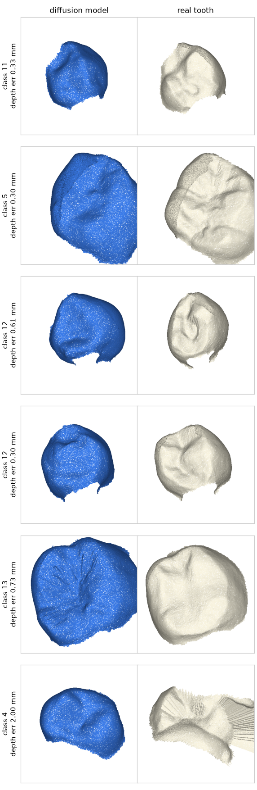
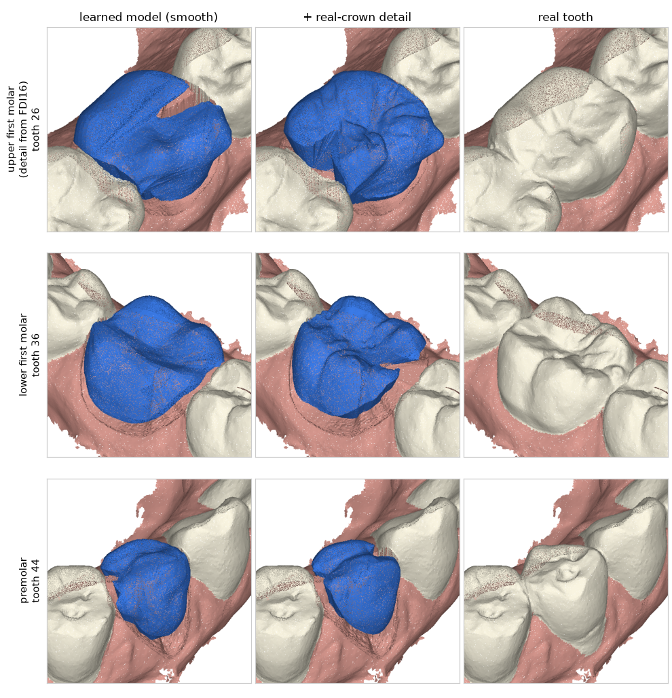

来时路：每一轮试了什么、结果怎样
成功的、失败的都记。卡住的时候回头看：哪类改法有效、哪类总是白费，往往比再想一个新点子更有用。 ● 采用 ● 没采用 ● 部分 / 默认关闭
回头看：到目前为止的规律
时间线
形状模型 出形状、扩散模型补细节牙冠生成
形状模型 的牙冠投到径向深度图，加噪到 600/1000 步再去噪，每步把低频换回 形状模型 的。不需要重新训练。网页默认生成器换成它。
相对邻牙高度 +0.130.00 mm · 咬合接触面积 7.44.5 mm² · 挤进邻牙 25%21% · 形状误差 0.2790.272 mm

扩散模型第一版（径向深度图）牙冠生成
3.4 万颗牙、30 轮、2.5 小时。咬合接触面积、挤进邻牙更像天然牙，但整体形状明显更差。启发了上面的组合做法。
形状误差 0.28 → 0.37 mm · 中央窝偏差 0.84 → 1.80 mm

评分卡加文献指标评估
牙尖 / 中央窝标志点误差、RMSE、Hausdorff、虚拟咬合纸面积（照 CrownGen、MADCrowner 等论文的量法）。已知问题：低矮的磨牙牙尖会漏检。
“外形 + 间隙损失”试验：外形尺寸 + 邻牙间隙进损失牙冠生成
想让评分卡直接当损失。结果牙冠被撑大。
挤进邻牙 25% → 52%
生成模型看对颌（形状模型）+ 封底后补做邻接牙冠生成
每个点看最近的 8 个对颌点；对颌按“牙冠上方 4 mm 厚的一片”裁剪，训练和推理一致。封底会切掉接触点，封底后在实体上再调一次邻接。
直接输出穿进对颌 48%5% · 邻接有缝 38%3.9% · 要求接触却没咬上 6.6%1.3%

咬合调整改成“够不着就抬、穿过去的磨掉”牙冠生成
以前整颗牙往下平移到不碰，89% 完全咬不上。现在照技工的做法两步走。点到曲面距离搬到显卡上算。
目标“刚好接触”时没有接触 89%~1%
牙冠质量评分卡评估
同一套量法量天然牙和生成牙，天然牙的分布就是及格线：邻接、咬合、形态、和真牙的误差。Bite2Text 60 位患者、235 颗牙。顺带查出邻接调整常常没生效、STL 导出失败两个 bug。
合并“被切成两个牙号的一颗牙”分割
看失败病例发现：间隙闭合时模型把一颗牙切成两个号来凑 14 颗。后处理里合并。
真实缺牙检出 43%55%（含相邻牙位 72%）· 代价：牙齐全时误报 1.3% → 3.4%
训练数据加“缺牙且间隙闭合”分割
方向对，但模拟的闭合只是平移，和真实病例差距大。
真实缺牙检出 41% → 43%
真实缺牙测试（Bite2Text）评估
医生报告里抽出 286 颗确认缺失的恒牙。模拟缺牙检出 9 成，真实只有 41%：第一次看清模拟和真实的差距。
真牙细节库牙冠生成
学习模型给外形，从真牙库里贴牙尖窝沟。外观更有细节，但误差略大。默认关闭。
单颗缺失 0.30 → 0.33 mm

颈缘线加入 78 个各牙位代型颈缘线
各牙位误差中位数 0.0850.038 mm · 最差一例 2.170.46 mm
学习式缺失牙生成（模板变形网络）牙冠生成
网络看其余牙齿，直接把模板牙变形成缺失牙。比对侧镜像 / 标准模板准，但表面偏平滑。
单颗缺失 0.470.30 mm · 左右都缺 0.700.32 mm

分割：模拟缺牙训练 + 全局自注意力分割
幻影牙 41%0% · 模拟缺牙检出 23%91%

学习式颈缘线（单独代型）颈缘线
不需要初始线。切牙测试集 0.085 mm（几何方法约 0.13 mm）。还没接进整颌流程。
公平测试集 + 第二轮调研评估
Teeth3DS 两套划分的测试集有 426 个扫描在对方训练集里，统一用交集 174 个。生成评估加双向 Chamfer、F-score（mm）。
第一次用真实口扫测，修暴露出来的问题工程
上颌坐标系、编号顺序、孤立顶点（7%）、Poseidon3D 左右手性相反…… CPU 基线、DGCNN、模板库、游离端统计、任务队列。
项目骨架起点
分割 → 缺牙检测 → 生成 → 颈缘线 → 预备体牙冠的完整流程（全部几何方法 + TGNet 服务）、标注编辑器、编号纠错、Docker 部署。